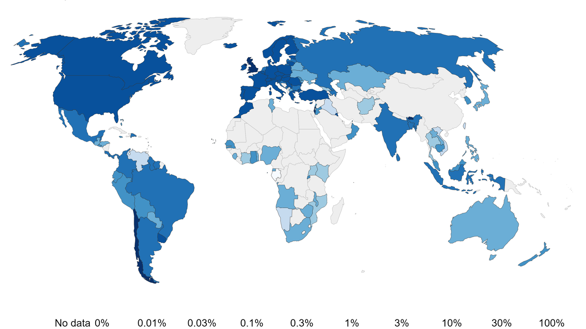

África criticó la desigualdad en el acceso a vacunas contra el coronavirus
John Nkengasong, director del Centro de Control y Prevención de Enfermedades (CDC) de África, dijo que "será extremadamente terrible de ver" que los países ricos reciban vacunas contra la Covid-19 y los africanos no".
Mientras el mundo observa el comienzo de las primeras vacunaciones masivas contra el coronavirus, el máximo funcionario de salud de África advirtió que el continente podría no ver las vacunas hasta después del segundo trimestre de 2021 e instó a la ONU a convocar una sesión especial para discutir la distribución ética y justa.
John Nkengasong, director del Centro de Control y Prevención de Enfermedades (CDC) de África, dijo que "será extremadamente terrible de ver" que los países ricos reciban vacunas contra la Covid-19 y los africanos no, especialmente cuando comienza un nuevo aumento de casos en el continente de 1.300 millones de habitantes.
En rueda de prensa en Nairobi, Kenia, el doctor Nkengasong, máximo funcionario de salud de la Unión Africana (UA) llamó a evitar "esta desconfianza Norte-Sur con respecto a las vacunas, que es un bien común", ya que Occidente no podrá derrotar al coronavirus si lo hace solo.
El funcionario de la CDC reiteró que el coronavirus podría volverse endémico en África si las vacunas tardan demasiado, por lo que hizo un llamado a los países con dosis excesivas para que se las administren a Covax o países necesitados
Asimismo, cuestionó que los países ricos compren vacunas "por encima de sus necesidades, mientras que en África todavía se está luchando con las instalaciones de Covax", informó la cadena de noticias estadounidense CNN.
Covax (colaboración para un acceso equitativo mundial a las vacunas contra la Covid-19) es la iniciativa multinacional de la Organización Mundial de la Salud (OMS), diseñada para entregar al menos algunas vacunas a países menos desarrollados.
Sin embargo, África no recibirá suficientes vacunas de Covax para alcanzar el objetivo de vacunar al 60% de la población y lograr la inmunidad colectiva, señaló Nkengasong.

El mapa de la desigualdad
El funcionario de la CDC reiteró que el coronavirus podría volverse endémico en África si las vacunas tardan demasiado, por lo que hizo un llamado a los países con dosis excesivas para que se las administren a Covax o países necesitados. En paralelo, el Coordinador del Programa de Inmunización y Desarrollo de Vacunas Oficina Regional de la OMS para África, Richard Mihigo, manifestó que es hora de "hacer un fuerte llamado" al acceso equitativo, al que calificó como un "problema real". Mihigo también advirtió que algunos países ordenaron muchas más dosis de las necesarias.
Los 54 países de África tienen ahora un total de más de 2,3 millones de infecciones confirmadas, incluidas 100.000 la semana pasada. "Claramente, la segunda ola está aquí, sin duda", aseguró Nkengasong.
Los 54 países de África tienen ahora un total de más de 2,3 millones de infecciones confirmadas, incluidas 100.000 la semana pasada
Mientras hablaba Nkengasong, la Organización Mundial del Comercio (OMC) se reunía en Ginebra a pedido de Sudáfrica e India que solicitaban la renuncia a algunas reglas de propiedad intelectual para permitir un acceso más rápido y fácil a las vacunas en todo el mundo.
"Pero un pequeño grupo de países de altos ingresos y sus socios comerciales se han opuesto a ella, incluidos Brasil, la Unión Europea (UE), Canadá, Estados Unidos, Japón y el Reino Unido", dijo Human Rights Watch en un comunicado con Amnistía Internacional apoyando la exención.
Estados Unidos argumentó que la exención sería un "paso amplio y sin precedentes", según notas de una reunión interna de la OMC el mes pasado, mientras que la UE explicó que la renuncia podría "socavar la colaboración público-privada en curso" sobre el acceso equitativo y destacó la necesidad de "preservar los incentivos".
Por su parte, el Reino Unido dijo que la exención crearía "incertidumbre a largo plazo". Rohit Malpani, un consultor de salud pública con sede en París, alertó que la oposición a la exención retrasaría aún más la producción de vacunas. "Tenemos una situación en la que los países donantes dicen que están dispuestos a proporcionar fondos a Covax para comprar vacunas, pero no hay ninguna disponible debido al problema (de la propiedad intelectual)", señaló. "Es como invitar a alguien a cenar y darle un plato, pero luego se queda con toda la comida", concluyó Malpani.